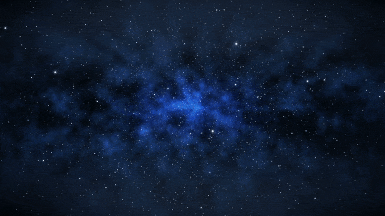
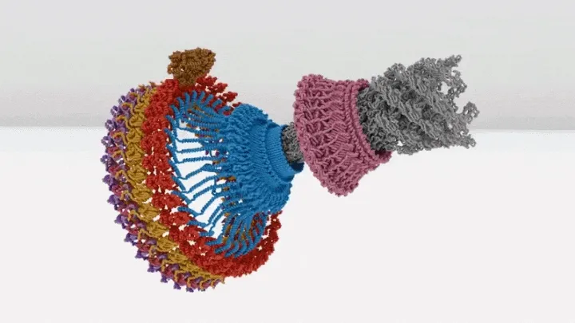
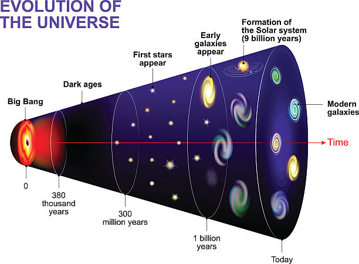
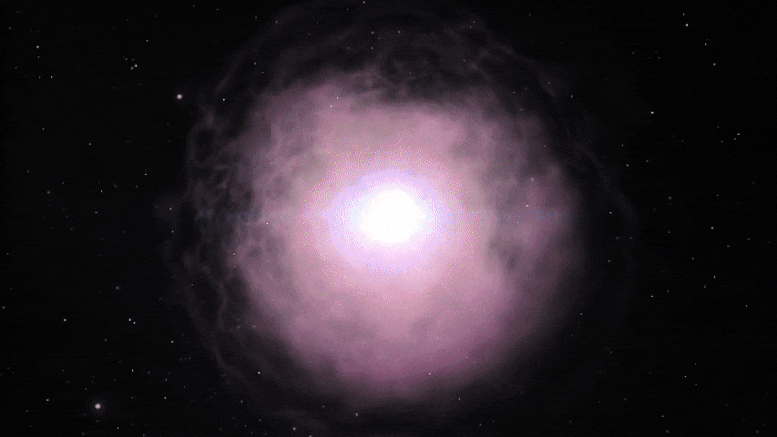
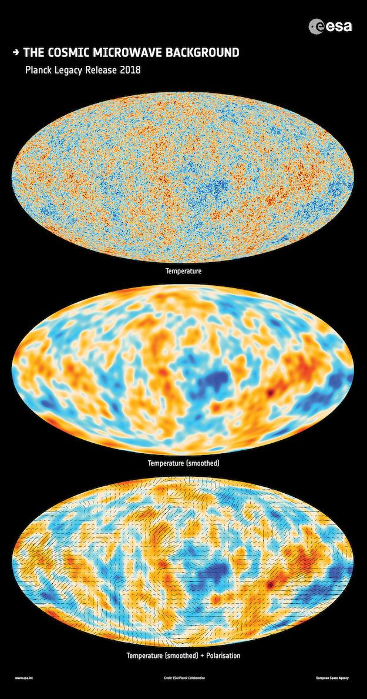
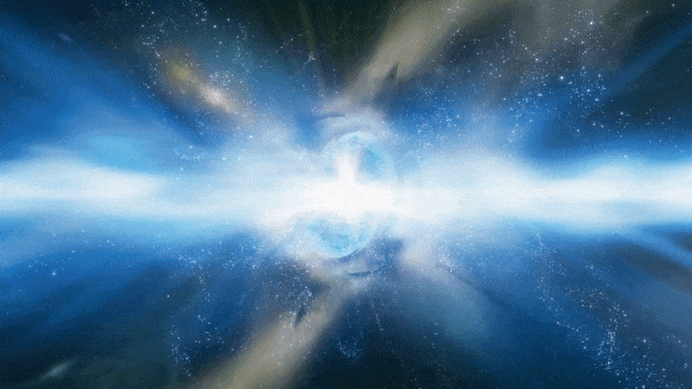
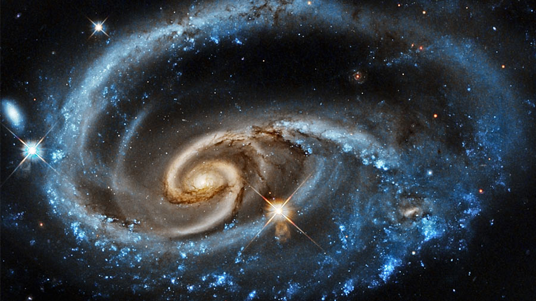

I. Singularitas: Titik Nol

Pada awalnya, tidak ada "ruang" untuk ditempati atau "waktu" untuk menunggu. Seluruh realitas terkonsentrasi pada satu titik dengan volume nol dan energi tak terhingga.
- Singularitas Gravitasi: Titik di mana kelengkungan ruang-waktu menjadi tak terhingga.
- Era Planck: Batas terjauh sains (10⁻⁴³ detik).
- Kerapatan Kritis: Mencapai kerapatan Planck (≈ 10⁹³ g/cm³).
II. Pemisahan Gaya Alam

Seiring suhu menurun, simetri Superforce pecah menjadi empat gaya fundamental:
1. Gravitasi
Gaya pertama yang memisah.
2. Nuklir Kuat
Pemicu fase Inflasi.
3. Nuklir Lemah
Mengatur interaksi subatomik.
4. Elektromagnetisme
Gaya cahaya dan muatan.
III. Garis Waktu Ekspansi

1. Inflasi Kosmik
Alam semesta mengembang secara eksponensial dalam sekejap mata.
2. Era Quark-Gluon
Semesta adalah "sup" plasma panas berisi Quark dan Gluon.
3. Hadrogenesis
Terciptanya Proton dan Neutron pertama.
IV. Pembentukan Materi

- Pembentukan Inti Atom: Terbentuk Deuterium dan Helium.
- Komposisi Primordial: 75% Hidrogen dan 25% Helium.
V. Cosmic Microwave Background (CMB)

Rekombinasi: Setelah 380.000 tahun, cahaya akhirnya bisa bergerak bebas menembus ruang angkasa.
VI. Dark Matter & Dark Energy

Materi Gelap (27%): "Lem" penjaga galaksi.
Energi Gelap (68%): Penyebab percepatan ekspansi.
Materi Biasa (5%): Bintang, planet, dan kita.
VII. Nasib Akhir Semesta

Big Freeze
Gelap dan dingin.
Big Rip
Struktur atom robek.
Big Crunch
Kembali mengerut.